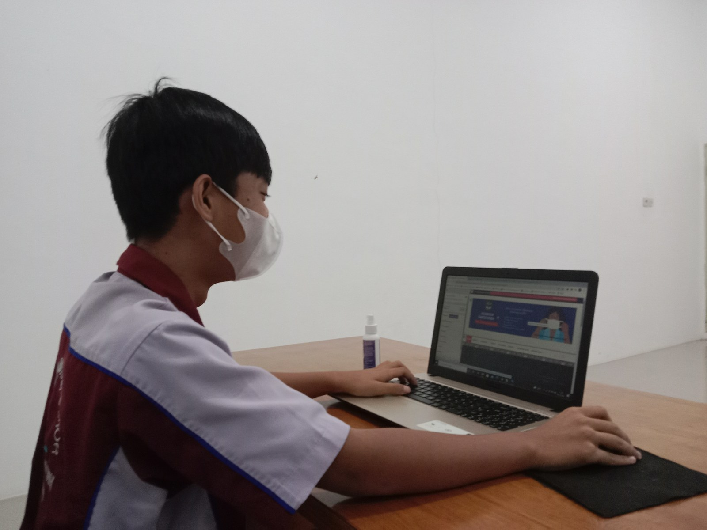
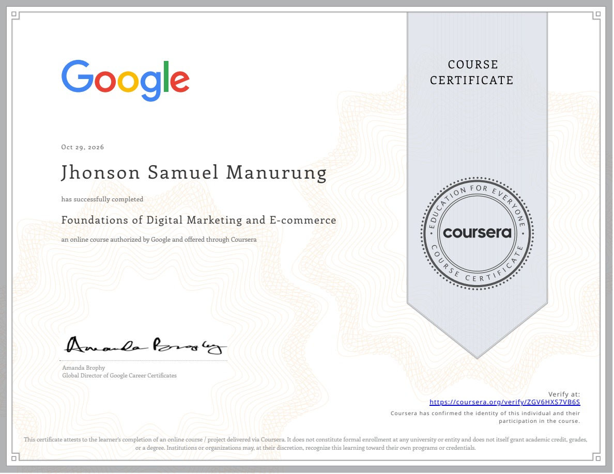
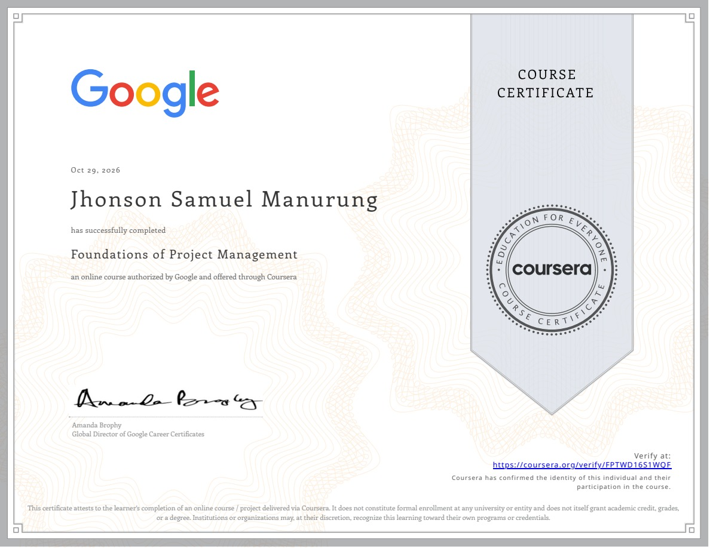
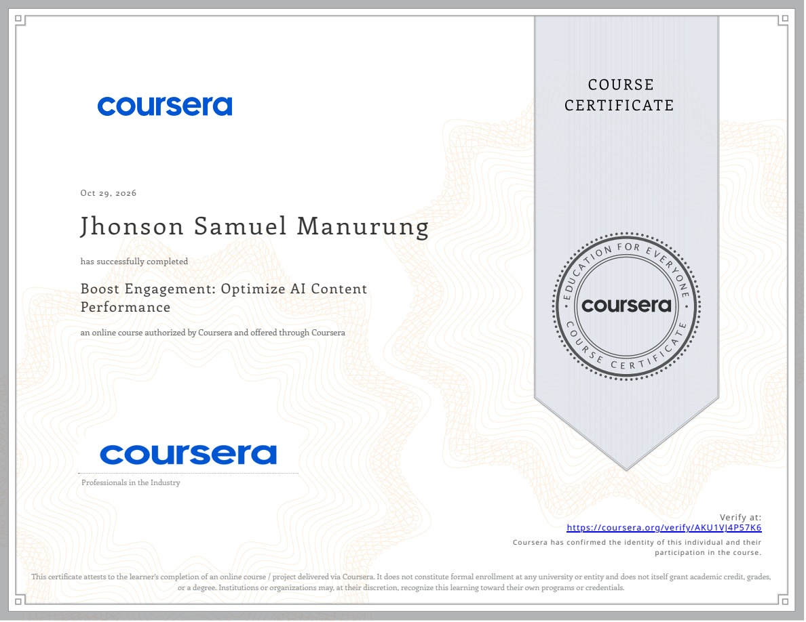
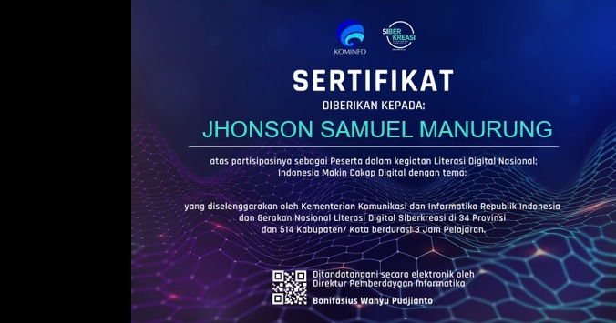
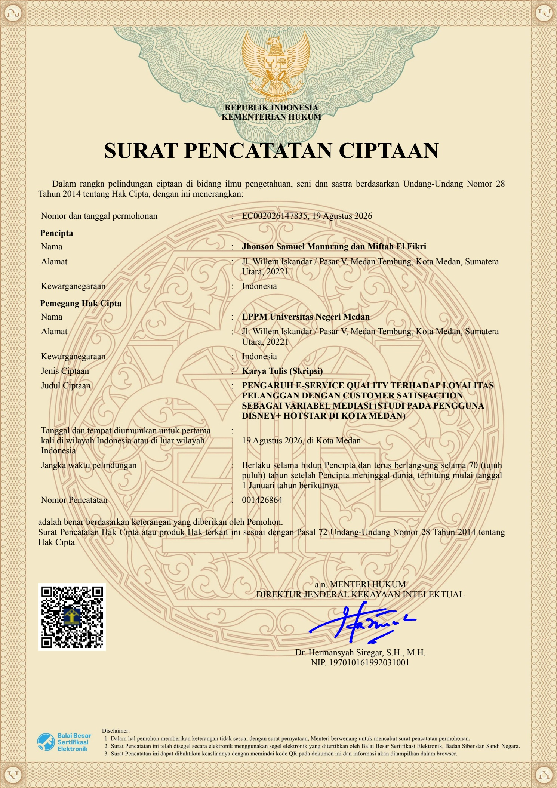

Creative Tech Stack & Tools
Perangkat lunak dan instrumen kerja yang saya gunakan secara terampil untuk merumuskan konsep, memproduksi materi visual, dan mempercepat alur kerja digital.
AI & Automation Workflow Stack
Mengintegrasikan otomatisasi skenario Make.com (webhooks & multi-app triggers), basis data riset Notion, serta akselerasi LLMs (ChatGPT, Claude, Gemini & Antigravity) untuk riset pasar instan, otomatisasi konten media sosial, dan efisiensi kerja digital hingga 10x lebih terukur.
Pengalaman Kerja & Proyek
Rekam jejak nyata dari magang industri kargo, pengabdian masyarakat desa, perancangan portal web dinas, hingga produksi kreatif naskah.
Infinity Logistics Medan
Social Media Marketing Intern
Memperkuat brand awareness perusahaan kargo & logistik melalui strategi konten edukatif di Instagram resmi. Mengemas alur operasional lapangan menjadi materi visual carousel dan Reels yang mudah dipahami, guna mengedukasi calon mitra bisnis mengenai keandalan layanan rute pengiriman dan mendorong keputusan kerja sama pengiriman kargo.
Desain feed carousel informasi rute & armada kargo.
Edukasi istilah ekspor-impor & proses pengiriman.

Website Instansi Diskominfo
WordPress Development & On-Page SEO (PKL)
Membangun portal website resmi instansi pemerintah (Dinas Pariwisata & Dinas Sosial) untuk memfasilitasi adopsi layanan informasi publik berbasis digital. Mengoptimalkan struktur On-Page SEO dan tata kelola navigasi yang ramah pengguna agar mempermudah masyarakat mengakses program serta informasi dinas secara cepat di mesin pencari.

Digitalisasi UMKM Desa Tomok
Edukasi Digital UMKM, QRIS Payment & Local SEO
Terjun langsung ke lapangan mendampingi pelaku UMKM lokal (toko suvenir, kuliner, grosir, rental motor) dalam adopsi transaksi digital dan promosi online. Membantu pembuatan QR Code pembayaran non-tunai (QRIS & e-wallet) untuk mempermudah transaksi usaha, serta mendaftarkan puluhan titik lokasi ke Google Maps (Local SEO) guna memperluas jangkauan pembeli.
Film Pendek: "NO WAY BACK"
Penulis Skenario & Integrasi Brand Placement
Merancang premis cerita, naskah skenario, serta eksekusi kampanye brand awareness kreatif melalui penempatan produk (Brand Placement). Mengintegrasikan produk sponsor ke dalam adegan naratif secara organik guna membangun retensi ingatan penonton (brand recall) tanpa mengurangi kualitas pesan cerita.
Sertifikasi Profesional
Sertifikat keahlian industri berstandar nasional dan global dari Kementerian Kominfo RI, Google, HubSpot & Coursera yang dapat diverifikasi keasliannya.
Inbound Sales Certified
Metodologi Inbound Sales: identifikasi prospek berkualitas, membangun koneksi, eksplorasi kebutuhan pembeli, dan advis solusi terarah.

Digital Marketing & E-commerce
Fondasi komprehensif: customer journey, funnel e-commerce, strategi kanal digital, dan analitik kampanye.

Foundations of Project Management
Metodologi Agile & Waterfall, alokasi sumber daya tim, manajemen risiko, dan eksekusi milestone kerja terstruktur.

Optimize AI Content Performance
Pemanfaatan AI untuk optimalisasi performa konten: prompt engineering terarah, analisis retensi, dan engagement digital.

Literasi Digital Nasional
Program nasional Indonesia Makin Cakap Digital: penguasaan 4 pilar kecakapan digital (Digital Skills, Digital Ethics, Digital Safety, dan Digital Culture) di 34 provinsi.
Eksplorasi Desain Grafis & Storytelling Visual
Koleksi karya kreatif mandiri: mulai dari label produk komersial terverifikasi (Hand Sanitizer Duo & Minyak Urut), atribut apparel KKN Tomok, hingga dokumentasi fotografi arsitektur kolonial cagar budaya dan human interest beresolusi tinggi.
Karya Tulis Skripsi & Hak Cipta (HAKI)
Riset kuantitatif perilaku konsumen digital dan hak cipta resmi yang terdaftar pada Kementerian Hukum dan HAM Republik Indonesia.

Pengaruh E-Service Quality terhadap Loyalitas Pelanggan dengan Customer Satisfaction sebagai Variabel Mediasi
Studi pada Pengguna Disney+ Hotstar di Kota Medan • S1 Bisnis Digital UNIMED
Riset tugas akhir yang meneliti dinamika retensi pengguna pada produk layanan digital berbasis langganan (subscription streaming). Mengkaji secara kuantitatif bagaimana kualitas layanan elektronik (E-Service Quality) mempengaruhi kepuasan pelanggan (Customer Satisfaction) dan loyalitas retensi pengguna (Customer Loyalty).
Analisis kuantitatif struktural dengan software SmartPLS.
Sampling purposif pengguna aktif Disney+ Hotstar di Kota Medan.
Surat Pencatatan Ciptaan No. 001426864 (UU No. 28/2014).
Mari Terhubung & Berkolaborasi
Terbuka untuk peluang kerja penuh waktu, kontrak, maupun proyek digital marketing, pengelolaan media sosial, dan pengembangan konten kreatif.